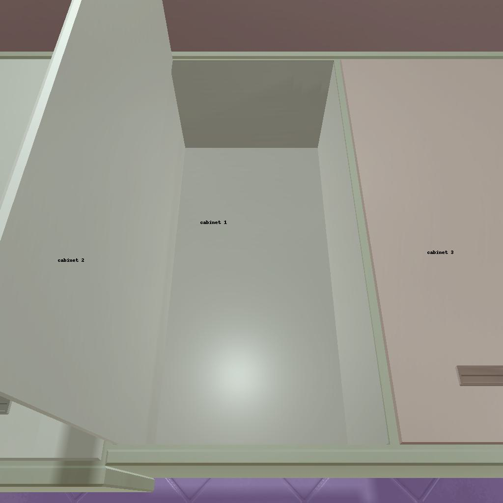

---------------------------------------------------------task: 12---------------------------------------------------------
--------------------------------------------------------------------------------------------------------------------------------------------------------------------
--------------------------------------------------------------------------------------------------------------------------------------------------------------------
Step:--------------------------------------------------------------------------7-------------------------------------------------------------------------------
----------------------------------------
VLM Prompt:
Image1:
Image2:
Image3:
**Instruction**
1. Analyze the provided image to identify all visible household objects, focusing on those relevant to the task description "put a clean tomato in countertop."
2. Use the analysis of the image and the task hint "The agent must find an object of the desired type, pick it up, go to a sink or a basin, clean the object with a sink or basin, and then find the correct location to place it and put it down there. The agent does not need to use soap bottle or faucet to clean the object, and the agent just needs to do action that is "clean the object with the sink or sink basin"." to answer the question: what is the most reasonable action in the choices for the task description "put a clean tomato in countertop"?
4. Decide and write the answer using the template: The answer is: (i): , where i is the real number. If there is no desired object in the image, search every place based on **Initial Observation** to find the object. And if no one is exactly correct, choose a similar answer.
**Initial Observation**
You are in the middle of a room. Looking quickly around you, you can see cabinet (1-6), microwave (1), countertop (1-2), coffeemachine (1), toaster (1), sink (1), sinkbasin (1), fridge (1)
**Answer Choices**
(1): go to cabinet 1
(2): go to microwave 1
(3): go to cabinet 4
(4): go to cabinet 5
(5): go to cabinet 6
(6): go to countertop 1
(7): go to coffeemachine 1
(8): go to toaster 1
(9): go to countertop 2
(10): go to sink 1
(11): go to sinkbasin 1
(12): open fridge 1
(13): close fridge 1
(14): take apple 1 from fridge 1
(15): take potato 1 from fridge 1
(16): examine fridge 1
**Answer**
Let's think step by step by following the instructions.
----------------------------------------
----------------------------------------
Original Response:
Firstly, we need to identify all visible household objects that are relevant to the task description "put a clean tomato in countertop." Looking at Image1 and Image2, we do not see any tomatoes, but we do see cabinets that could potentially contain a tomato. Image3 shows the inside of a fridge with an apple and a potato, but no tomato.
Based on the task hint, the agent must find a tomato, clean it, and then place it on the countertop. Since we cannot see a tomato in any of the provided images, we need to search for it based on the Initial Observation, which lists cabinets and a fridge as potential storage locations.
Among the answer choices, the most reasonable action to find a tomato would be to open and search the cabinets or the fridge. Since we've already seen the inside of the fridge and it does not contain a tomato, we can eliminate choices related to the fridge (12, 13, 14, 15, 16). We can also eliminate actions related to objects we know do not help with the task (2, 7, 8).
The remaining actions are related to going to different cabinets or the sink/sinkbasin, which could be useful for cleaning the tomato once it has been found. Since our immediate goal is to find a tomato, we should go to a cabinet that has not been opened yet.
The answer is: (3): go to cabinet 4
----------------------------------------
----------------------------------------
>>> Refine Original VLM Response and Get Pure Action: go to cabinet 4
----------------------------------------
-----------------------------------------------------------------
Running time: 53.14106607437134 seconds
Total Money: 7.20264
-----------------------------------------------------------------
-----------------------------------------------------------------
Text Observation:You arrive at loc 4. The cabinet 4 is closed.
-----------------------------------------------------------------
UNSUCCEED